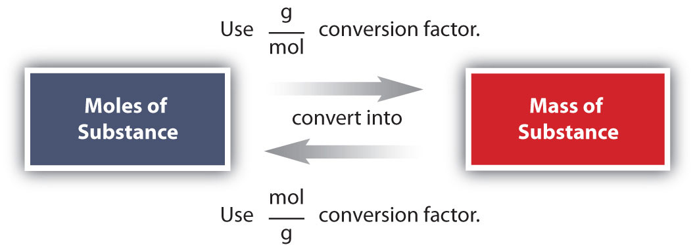

Example 3 in Section 6.2 "Atomic and Molar Masses" stated that the mass of 2 mol of U is twice the molar mass of uranium. Such a straightforward exercise does not require any formal mathematical treatment. Many questions concerning mass are not so straightforward, however, and require some mathematical manipulations.
The simplest type of manipulation using molar mass as a conversion factor is a mole-mass conversionThe conversion from moles of material to the mass of that same material. (or its reverse, a mass-mole conversion). In such a conversion, we use the molar mass of a substance as a conversion factor to convert mole units into mass units (or, conversely, mass units into mole units).
We established that 1 mol of Al has a mass of 26.98 g (Example 3 in Section 6.2 "Atomic and Molar Masses"). Stated mathematically,
1 mol Al = 26.98 g AlWe can divide both sides of this expression by either side to get one of two possible conversion factors:
The first conversion factor can be used to convert from mass to moles, and the second converts from moles to mass. Both can be used to solve problems that would be hard to do “by eye.”
The algebra skills we are using here are the same skills that we used in Chapter 1 "Chemistry, Matter, and Measurement" to perform unit conversions.
What is the mass of 3.987 mol of Al?
Solution
The first step in a conversion problem is to decide what conversion factor to use. Because we are starting with mole units, we want a conversion factor that will cancel the mole unit and introduce the unit for mass in the numerator. Therefore, we should use the conversion factor. We start with the given quantity and multiply by the conversion factor:
Note that the mol units cancel algebraically. (The quantity 3.987 mol is understood to be in the numerator of a fraction that has 1 in the unwritten denominator.) Canceling and solving gives
Our final answer is expressed to four significant figures.
How many moles are present in 100.0 g of Al? (Hint: you will have to use the other conversion factor we obtained for aluminum.)
Conversions like this are possible for any substance, as long as the proper atomic mass, formula mass, or molar mass is known (or can be determined) and expressed in grams per mole. Figure 6.2 "A Simple Flowchart for Converting between Mass and Moles of a Substance" is a chart for determining what conversion factor is needed, and Figure 6.3 "A Flowchart Illustrating the Steps in Performing a Unit Conversion" is a flow diagram for the steps needed to perform a conversion.
Figure 6.2 A Simple Flowchart for Converting between Mass and Moles of a Substance
It takes one mathematical step to convert from moles to mass or from mass to moles.
Figure 6.3 A Flowchart Illustrating the Steps in Performing a Unit Conversion
When performing many unit conversions, the same logical steps can be taken.
A biochemist needs 0.00655 mol of bilirubin (C33H36N4O6) for an experiment. How many grams of bilirubin will that be?
Solution
To convert from moles to mass, we need the molar mass of bilirubin, which we can determine from its chemical formula:
| 33 C molar mass: | 33 × 12.01 g = | 396.33 g |
| 36 H molar mass: | 36 × 1.01 g = | 36.36 g |
| 4 N molar mass: | 4 × 14.00 g = | 56.00 g |
| 6 O molar mass: | 6 × 16.00 g = | 96.00 g |
| Total: | 584.69 g |
The molar mass of bilirubin is 584.69 g. (We did this calculation in Example 4 in Section 6.2 "Atomic and Molar Masses".) Using the relationship
1 mol bilirubin = 584.69 g bilirubinwe can construct the appropriate conversion factor for determining how many grams there are in 0.00655 mol. Following the steps from Figure 6.3 "A Flowchart Illustrating the Steps in Performing a Unit Conversion":
The mol bilirubin unit cancels. The biochemist needs 3.83 g of bilirubin.
A chemist needs 457.8 g of KMnO4 to make a solution. How many moles of KMnO4 is that?
For our bodies to function properly, we need to ingest certain substances from our diets. Among our dietary needs are minerals, the noncarbon elements our body uses for a variety of functions, such developing bone or ensuring proper nerve transmission.
The US Department of Agriculture has established some recommendations for the RDIs of various minerals. The accompanying table lists the RDIs for minerals, both in mass and moles, assuming a 2,000-calorie daily diet.
| Mineral | Male (age 19–30 y) | Female (age 19–30 y) | ||
|---|---|---|---|---|
| Ca | 1,000 mg | 0.025 mol | 1,000 mg | 0.025 mol |
| Cr | 35 µg | 6.7 × 10−7 mol | 25 µg | 4.8 × 10−7 mol |
| Cu | 900 µg | 1.4 × 10−5 mol | 900 µg | 1.4 × 10−5 mol |
| F | 4 mg | 2.1 × 10−4 mol | 3 mg | 1.5 × 10−4 mol |
| I | 150 µg | 1.2 × 10−6 mol | 150 µg | 1.2 × 10−6 mol |
| Fe | 8 mg | 1.4 × 10−4 mol | 18 mg | 3.2 × 10−4 mol |
| K | 3,500 mg | 9.0 × 10−2 mol | 3,500 mg | 9.0 × 10−2 mol |
| Mg | 400 mg | 1.6 × 10−2 mol | 310 mg | 1.3 × 10−2 mol |
| Mn | 2.3 mg | 4.2 × 10−5 mol | 1.8 mg | 3.3 × 10−5 mol |
| Mo | 45 mg | 4.7 × 10−7 mol | 45 mg | 4.7 × 10−7 mol |
| Na | 2,400 mg | 1.0 × 10−1 mol | 2,400 mg | 1.0 × 10−1 mol |
| P | 700 mg | 2.3 × 10−2 mol | 700 mg | 2.3 × 10−2 mol |
| Se | 55 µg | 7.0 × 10−7 mol | 55 µg | 7.0 × 10−7 mol |
| Zn | 11 mg | 1.7 × 10−4 mol | 8 mg | 1.2 × 10−4 mol |
This table illustrates several things. First, the needs of men and women for some minerals are different. The extreme case is for iron; women need over twice as much as men do. In all other cases where there is a different RDI, men need more than women.
Second, the amounts of the various minerals needed on a daily basis vary widely—both on a mass scale and a molar scale. The average person needs 0.1 mol of Na a day, which is about 2.5 g. On the other hand, a person needs only about 25–35 µg of Cr per day, which is under one millionth of a mole. As small as this amount is, a deficiency of chromium in the diet can lead to diabetes-like symptoms or neurological problems, especially in the extremities (hands and feet). For some minerals, the body does not require much to keep itself operating properly.
Although a properly balanced diet will provide all the necessary minerals, some people take dietary supplements. However, too much of a good thing, even minerals, is not good. Exposure to too much chromium, for example, causes a skin irritation, and certain forms of chromium are known to cause cancer (as presented in the movie Erin Brockovich).
What relationship is needed to perform mole-mass conversions?
What information determines which conversion factor is used in a mole-mass conversion?
The atomic or molar mass is needed for a mole-mass conversion.
The unit of the initial quantity determines which conversion factor is used.
What is the mass of 8.603 mol of Fe metal?
What is the mass of 0.552 mol of Ag metal?
What is the mass of 6.24 × 104 mol of Cl2 gas?
What is the mass of 0.661 mol of O2 gas?
What is the mass of 20.77 mol of CaCO3?
What is the mass of 9.02 × 10−3 mol of the hormone epinephrine (C9H13NO3)?
How many moles are present in 977.4 g of NaHCO3?
How many moles of erythromycin (C37H67NO13), a widely used antibiotic, are in 1.00 × 103 g of the substance?
Cortisone (C21H28O5) is a synthetic steroid that is used as an anti-inflammatory drug. How many moles of cortisone are present in one 10.0 mg tablet?
Recent research suggests that the daily ingestion of 85 mg of aspirin (also known as acetylsalicylic acid, C9H8O4) will reduce a person’s risk of heart disease. How many moles of aspirin is that?
480.5 g
4.42 × 106 g
2,079 g
11.63 mol
2.77 × 10−5 mol